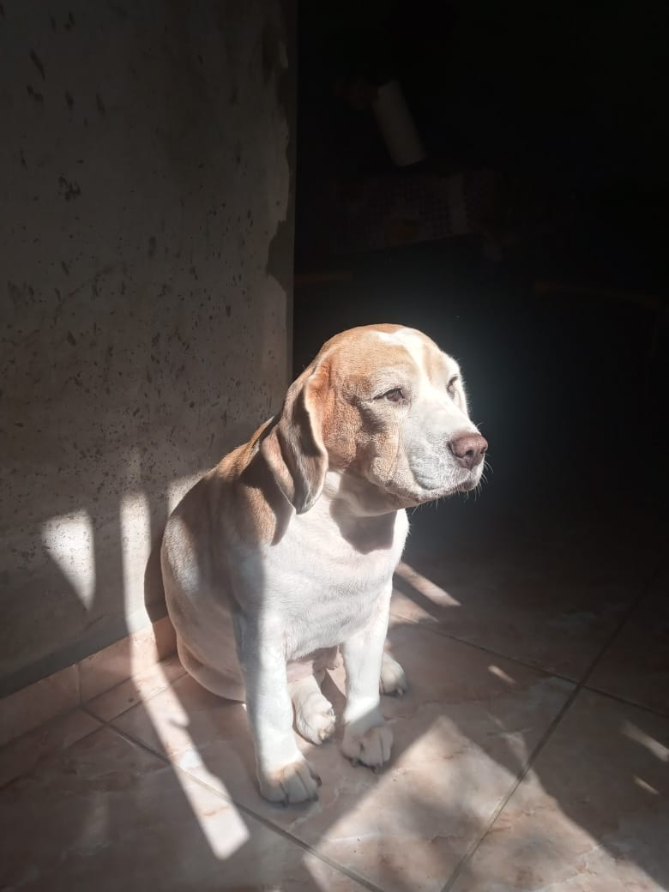
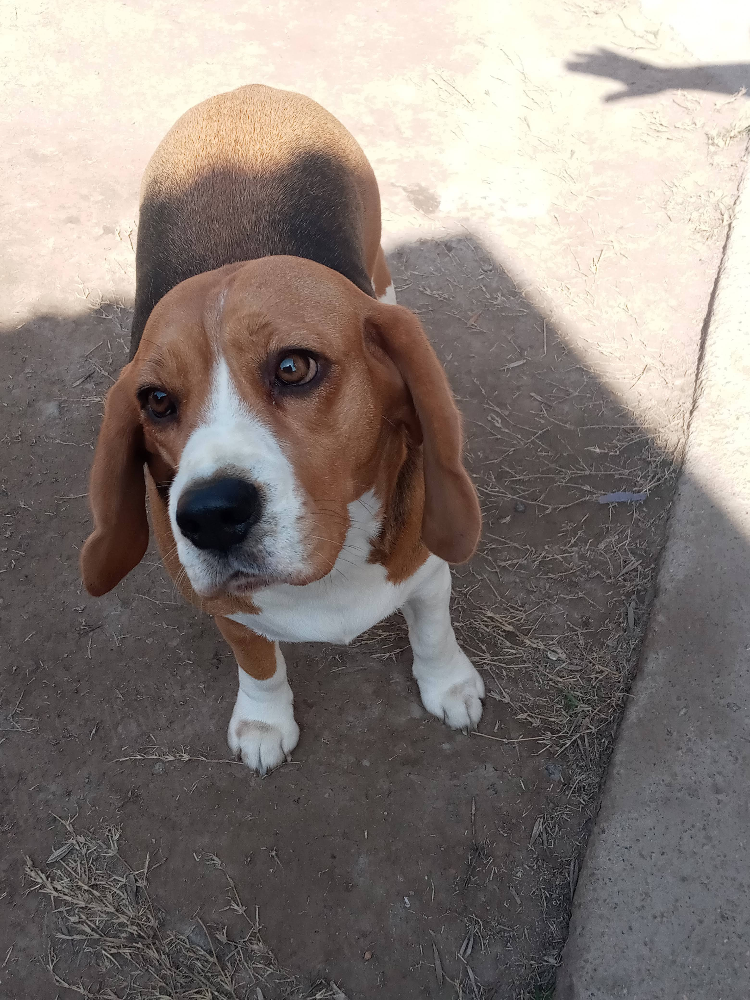

RASTREANDO HUELLAS

NOMBRE: Lola
RAZA: Beagle
EDAD: 6 años
ÚLTIMA VEZ VISTO: -
CARACTERÍSTICAS: Hembra, bicolor
CONTACTO: -

NOMBRE: Mora
RAZA: Beagle
EDAD: 4 años
ÚLTIMA VEZ VISTO: -
CARACTERÍSTICAS: Hembra, tricolor
CONTACTO: -